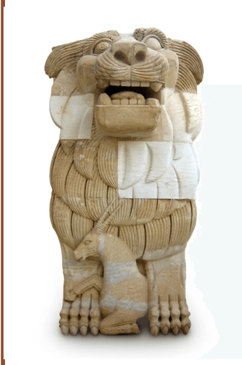
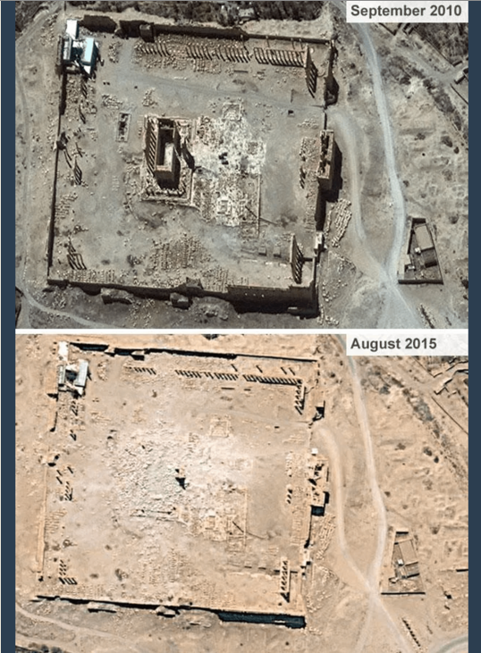

Strategic Integration of LLMs
This phase focuses on leveraging Large Language Models (LLMs) to bridge the information gaps identified in Knowledge Graphs. By using advanced prompting techniques, we extracted academic knowledge about restoration methods, international actors, and authenticity dimensions that were previously unstructured.
Technique 1: Zero-Shot Prompting
Zero-shot prompting was used to test the baseline knowledge of models regarding specific restoration projects.
Prompt
"What is the current restoration status of the Temple of Bel in Palmyra? Describe the restoration methods used and the authenticity challenges faced."
Visual Proof: ChatGPT-4o Interaction
The Temple of Bel, destroyed in August 2015, has been the focus of international restoration discussions. Key methods include Anastylosis and 3D reconstruction. Authenticity challenges arise from the "Ship of Theseus" paradox: how much of the original temple remains if significant portions are replaced with modern materials?

Figure 6: Visual evidence supporting the LLM's description of destruction and the subsequent need for restoration.
Technique 2: Few-Shot Prompting
To ensure consistent output for KG enrichment, we provided examples of how monuments should be categorized based on their restoration status.
Visual Proof: Claude 3.5 Sonnet Extraction
Example 1: Lion of Al-Lat -> Status: Restored; Method: Anastylosis Example 2: Arch of Triumph -> Status: Reconstructed; Method: 3D Mapping Now describe: Temple of Baalshamin...
Status: Partially Restored
Method: Stabilization and selective reassembly
Authenticity: Material authenticity remains compromised; experiential authenticity is being prioritized through digital twins.

Figure 7: The Lion of Al-Lat serves as the primary reference for successful "Material Authenticity" preservation.
Technique 3: Chain-of-Thought Prompting
We guided the models through a step-by-step reasoning process to define the complex concept of Composite Authenticity.
Visual Proof: Gemini 1.5 Pro Reasoning
Step 1: Identify original components (limestone blocks).
Step 2: Identify restoration layers (modern mortar, 3D printed sections).
Step 3: Synthesize the state. Result: The site is no longer "purely" authentic but possesses Composite Authenticity, where the value lies in the dialogue between original remains and restoration efforts.

Figure 8: Satellite data provides the objective baseline for the model's step-by-step reasoning about site destruction.
Cross-Verification with Official Sources
To avoid "Hallucinations," all LLM outputs were cross-referenced with official reports from UNESCO and the DGAM (Directorate-General of Antiquities and Museums). This ensures that the enriched data added to our project is academically sound and factually accurate.